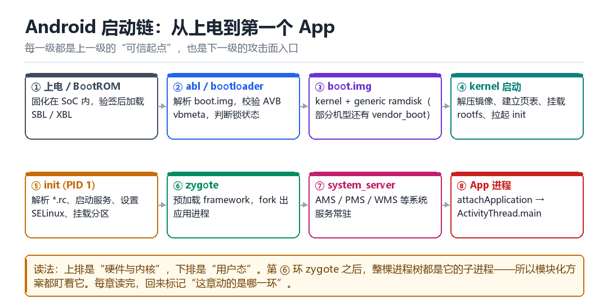
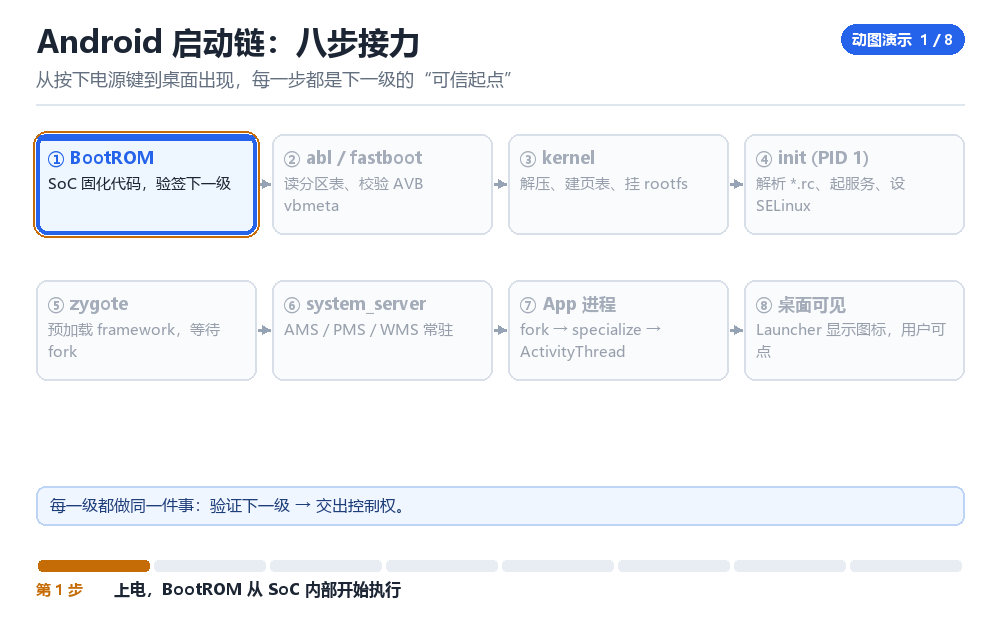

Android 手机启动过程
从 abl 开始
把“按下电源键”到“看到桌面”拆成八步，每步都标上可信边界。
2.1 八个阶段，一条链
启动过程看起来很长，但结构非常规整：每一级都负责验证下一级，然后把控制权交出去。这种“链式信任”是所有安全启动方案的基础，也是所有攻击者要逐段攻破的目标。

2.2 阶段一：BootROM 与 abl
上电后 CPU 从固化在 SoC 内的 BootROM 开始执行。这段代码物理上不可改，它做的最重要的一件事是：验证下一级引导程序的签名。验证通过后，才把控制权交给 SBL / XBL，最终到 abl（Android Bootloader）。
abl 是你能“看见”的第一层，也是 fastboot 模式所在的地方。它负责：读分区表、加载 boot.img、校验 AVB（如果开启）、把 boot 状态通过 androidboot.verifiedbootstate= 传进内核命令行，然后跳进内核。注意方向：abl 是“值的产生者”，它写的是 cmdline；ro.boot.* 这组只读属性是 init 起来后从 cmdline 解析出来的——abl 自己不读属性。
| AVB 状态 | 含义 | 对三绿的影响 |
|---|---|---|
| GREEN | 已锁且验证通过 | 可满足 STRONG |
| YELLOW | 已锁但使用自定义密钥 | 通常无法满足 STRONG |
| ORANGE | 已解锁 | 只能拿到 BASIC |
| RED | 验证失败 | 启动被拒或降级 |
2.3 阶段二：kernel 到 init
内核被解压、建立页表、初始化子系统，然后挂载 rootfs 并执行 /init。这个 init 是 PID 1，它读一堆 .rc 文件（init.rc、init.<hardware>.rc、vendor 下的 rc），按触发器启动服务、设置属性、并把 SELinux 从 permissive 切到 enforcing。
这一层有三个高价值位置：rc 文件（决定启动什么）、sepolicy（决定能干什么）、属性系统（决定上层看到什么）。Magisk 的改动全部落在这三处。
2.4 阶段三：zygote 与 system_server
init 拉起 zygote：它预加载 framework 的常用类与资源，然后进入循环，等 system_server 通过 socket 请求 fork 新进程。system_server 自己也是 zygote fork 出来的，它承载 AMS、PMS、WMS 等核心服务，从这一刻起，Android 的“系统”才算真正活过来。

2.5 阶段四：App 进程
点击图标时，Launcher 通过 Binder 请求 AMS 启动 Activity；AMS 决定进程不存在，于是通过 socket 让 zygote fork 一个子进程。子进程继承 zygote 里预加载的一切，然后跑 RuntimeInit → ActivityThread.main() → 建立主线程 Looper → attachApplication 把自己的 Binder 代理交给 AMS → AMS 回调 bindApplication → 创建 Application → 启动 Activity。
2.6 三个“必须记住”的观察点
- zygote 是所有 Java 进程的父亲。任何“覆盖全部 App”的方案（Zygisk、LSPosed、Frida 门控）都从这里下手。
- 降权发生在 fork 之后。所以中间存在一个“已是新进程、但还没有 App 身份”的窗口期，这就是 pre-specialize 阶段的价值。
- sepolicy 与 mount 视图是按 namespace 分的。同一份文件，在不同进程眼里可以是不同内容——隐藏与检测的战场就在这里。
getprop ro.boot.verifiedbootstate # GREEN / YELLOW / ORANGE
getprop ro.boot.flash.locked # 1 = 已锁
getprop ro.build.fingerprint # 设备指纹
ps -A -o PID,PPID,NAME | head -40 # 看进程树
getprop | grep -i 'init.svc' # 看服务状态2.7 本章自测
- 八个阶段按顺序背出来，并指出哪一步开始有 Java 世界。
- AVB 的四种状态分别对应什么检测结果？
- 为什么说“fork 之后、降权之前”是一个有价值的窗口？
- 如果目标 App 在
init阶段就被注入，它在attachApplication时能观察到什么异常？
2.8 深入：为什么“启动早期”是检测的黄金窗口
启动早期（init 到 zygote 之间）有三个特点：观察者少（还没有第三方代码在跑）、时序确定（每一步都可预期）、权限高（还没降权）。检测方喜欢在这里布置检查，因为它拿到的数据最“干净”；注入方也喜欢在这里动手，因为一旦过了这个窗口，很多状态就已经定型了。
| 阶段 | 观察者 | 可被检测的状态 |
|---|---|---|
| abl | bootloader 自己 | AVB 结果、锁状态 |
| kernel | 内核日志 | cmdline、模块列表 |
| init | init 自己 + rc 定义的检查 | 属性、服务、sepolicy |
| zygote 之前 | 极少 | 几乎无 |
| zygote 之后 | AMS / PMS 等 | 进程、包、服务表 |
2.9 属性系统：一个被低估的观测面
getprop 返回的键值对，是“系统自述”。它同时被 init、zygote、App 读取，所以一旦某个属性被改动，影响面很广，痕迹也很明显。
ro.boot.verifiedbootstate # GREEN / YELLOW / ORANGE
ro.boot.flash.locked # 1 = 已锁
ro.debuggable # 1 = 可调试（userdebug）
ro.build.type # user / userdebug / eng
ro.product.model # 机型（三绿交叉校验会用到）
init.svc.<service> # 服务运行状态2.10 一次真实的排查记录
现象：某 App 在测试机上一切正常，在另一台同型号设备上启动即闪退。
- 对比两台设备的
getprop ro.build.fingerprint——一致。 - 对比
ro.boot.verifiedbootstate——一台 GREEN，一台 ORANGE。 - 确认第二台设备解锁过 bootloader 且未重新上锁。
- 结论：App 的启动校验里包含 boot 状态检查，解锁设备被判定为“不可信环境”。
- 处理：在测试流程里明确区分“已锁 / 已解锁”两类设备，避免把环境差异误判为代码问题。
2.11 原理推演：为什么“链式信任”必然有断点
链式信任的结构是：A 验证 B、B 验证 C、C 验证 D……听起来天衣无缝。但它有一个结构性的弱点：链条的起点必须被无条件信任，而链条的每一环都必须是“能够验证下一环”的代码。
于是攻击面自然分成两类：攻破根（物理手段、eFuse 读出）与攻破某一环的“验证逻辑”——后者现实得多，因为验证逻辑也是代码，也可能有 bug，也可能被“绕过而不是破解”。
| 环节 | 验证什么 | 常见绕过方式 |
|---|---|---|
| BootROM → XBL | 签名 | 几乎无法绕过（物理） |
| abl → boot | AVB 摘要 | 关掉 verity、重签 vbmeta |
| kernel → 用户态 | dm-verity | 改 fstab 或改 dm 表 |
| App 层 | 签名 / 完整性 | 改返回结果、重打包 |
2.12 数据细节：启动各阶段的时间预算
知道各阶段耗时，对“注入窗口”的把握很有帮助。下面是典型中高端机型的量级（仅供建立直觉）：
| 阶段 | 量级 | 说明 |
|---|---|---|
| BootROM → abl | 数百毫秒 | 含验签 |
| abl → kernel | 约 1 秒 | 含 AVB 校验与解压 |
| kernel 初始化 | 1~3 秒 | 与驱动数量强相关 |
| init → zygote | 1~2 秒 | 含 sepolicy 加载 |
| zygote 预加载 | 数百毫秒 | framework 类预加载 |
| 首次桌面 | 数秒 | 含 system_server 启动 |
这张表的实用价值：如果检测逻辑要在“zygote 之后立即”执行，那它只有几百毫秒的窗口；如果注入方要在“specialize 之前”介入，窗口更短。谁能在这个量级上稳定工作，谁就赢了一半。
2.13 工程权衡：为什么不要在 rc 里加东西
在 init.rc 里加一个 service 是最直观的“开机自启”方式，但它有三个明显缺点：rc 文件本身可被校验、**service 会出现在 init.svc.* 属性里、崩溃会被 init 记录并重启**。
更隐蔽的做法是“挂到已有 service 上”——不新增节点，而是修改既有服务的启动参数或环境变量。这样属性面、进程面都不变，只有真正比对 rc 内容的人才能发现。
把时间倒回到上电那一纳秒
从按下电源键到桌面出现，每一步都是下一级的“可信起点”

手指按住电源键，PMIC 把各路电压依次拉起来，复位信号被拉高的那一纳秒，CPU 还不知道什么是内存——DDR 没初始化、没有栈、没有堆，连一条 C 函数都调不了。它只能从复位向量跳进固化在 SoC 里的几十 KB 的 BootROM。把镜头停在这里：整台手机此后所有的「信任」，都是从这几十 KB、物理上再也改不了的代码开始的。
接下来的十几秒是一场接力：每一级跑起来后，先验证下一级的签名，再把控制权交出去。只要中间有一级说「对不上」，链子就断在那一拍。与其背八个阶段的名字，不如盯住每一拍里那个「谁验谁、验不过会怎样」的动作。
验签这一下，到底比对了什么
- BootROM 读熔丝 → 对 SoC 内一次性可编程的 efuse → 取出出厂时烧死的公钥哈希 → 结果：手里有了一把「信任根」，它不在磁盘上，改不动。
- BootROM 读下一级镜像头 → 对 XBL/SBL 镜像 → 取出签名与公钥，先用 efuse 哈希核对公钥是否被换过 → 结果：公钥是原厂的那把，才继续。
- BootROM 算哈希并验签 → 对镜像正文 → 用公钥解出签名里的摘要，与自己算的摘要逐字节比 → 结果：一致就跳进去执行，不一致直接停在这里，屏幕全黑。
- abl 接棒 → 对 boot.img 与 vbmeta → 再做一次 AVB 校验，把
androidboot.verifiedbootstate=拼进内核命令行 → 结果：一个带着「本次启动是否可信」结论的 cmdline 被递给了内核。 - 内核把 cmdline 收好 → 对
/proc/cmdline→ 原样保存这串参数 → 结果：这个结论第一次落到了普通世界能读到的地方。
这里最容易记反的是方向：abl 是值的产生者，它写 cmdline；init 是值的翻译者，它把 cmdline 变成属性。BootROM 那一步则连「属性」这个概念都还不存在——它只有熔丝和一段验签代码。
一条 cmdline 是怎么变成 ro.boot.* 的
- 内核启动 → 对收到的一长串参数 → 原样挂到
/proc/cmdline→ 结果：adb shell cat /proc/cmdline能逐字看到它。 - init 作为 PID 1 起来 → 对 cmdline 里所有
androidboot.*键值对 → 逐个解析 → 结果：androidboot.verifiedbootstate=green被识别成一个待设的属性。 - init 写属性区 → 对共享的 property area → 把键名换成
ro.boot.verifiedbootstate并写入 → 结果：getprop ro.boot.verifiedbootstate第一次有了值。 - 上层开读 → 对 zygote、system_server、App → 通过 property 接口读到这个只读值 → 结果：Play Integrity、检测 SDK、Attestation 全都拿它当「系统自述」用。
于是同一份事实在三个地方有三个形态：熔丝里的哈希、cmdline 里的字符串、属性区里的键值对。伪造者往往只改最后一层，却忘了前两层还在那儿——这就是后面所有交叉校验能成立的原因。
动手：把这条链从头到尾摸一遍
adb shell cat /proc/cmdline # 看 abl 到底拼了什么进来
adb shell getprop ro.boot.verifiedbootstate # GREEN / YELLOW / ORANGE
adb shell getprop ro.boot.flash.locked # 1 = 已锁
adb shell getprop ro.boot.vbmeta.digest # 部分机型有 vbmeta 摘要
adb shell dmesg | grep -i 'avb\|verified' # 内核侧看到的校验记录成功的样子是三处自洽：cmdline 里的 androidboot.verifiedbootstate、属性里的 ro.boot.verifiedbootstate、以及 ro.boot.flash.locked 三者能互相对上（已锁且验证通过就是 green＋1）。失败有两种：一是 getprop 返回空，说明这台 ROM 没把该字段透传出来，别当成「没问题」；二是 cmdline 写着 green、属性却被人改成别的，这恰恰是隐藏方案只改了一层留下的破绽。注意上面 grep 里的 \| 是转义后的或号，别漏了反斜杠。
| 观测点 | 由谁写入 | 普通世界能改吗 |
|---|---|---|
| efuse 公钥哈希 | 产线一次性烧断 | 不能，物理熔断 |
| /proc/cmdline | abl 拼接、内核保存 | 启动后只读 |
| ro.boot.* 属性 | init 从 cmdline 翻译 | ro. 前缀只读，但读取路径可拦 |
| Attestation 扩展 | TEE 签进证书 | 普通世界改不动 |
| getprop 的显示值 | 属性服务返回 | 最常被 hook 的一层 |
把「cmdline 产生状态 → init 翻译成属性」这条链记牢。第 03 章会看到，TEE 把 verifiedBootState、deviceLocked、verifiedBootHash 这些值签进证书时，用的正是本章这一路传上来的结论——你在启动链上改的每一个字节，最后都会以「签了名的事实」形式出现在证明里。